sap13ns
Cómo funciona el gestor de contenidos sap13ns: entrar al panel, escribir y publicar, dar forma al sitio, administrar usuarios, plugins y ajustes, y mantenerlo todo a salvo.
Capítulo 1Qué es sap13ns
sap13ns es un gestor de contenidos para blogs y webs de empresa. Hace lo que se usa a diario en WordPress —entradas, páginas, comentarios, medios, menús, temas, plugins y varios idiomas— con un único programa y una base de datos.
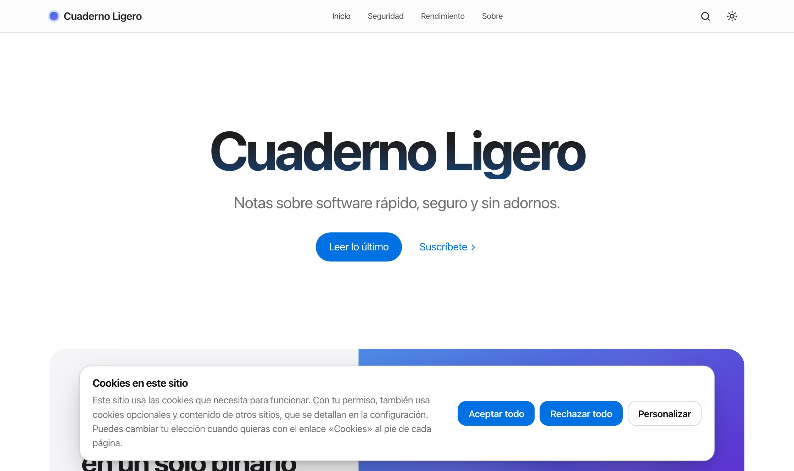
Las piezas
| Pieza | Qué es |
|---|---|
| El sitio público | Lo que ven los visitantes: la portada, las entradas, las páginas, el blog, los archivos por categoría y la búsqueda. |
| El panel | La administración, en /admin. Desde aquí se escribe, se diseña y se configura. Está en español y en inglés. |
| Entradas | Los artículos del blog. Tienen fecha, autor, categorías y etiquetas, y aparecen en los listados y en los feeds. |
| Páginas | Contenido estable: «Quiénes somos», «Contacto», el aviso legal. Pueden colgar unas de otras y no llevan categorías. |
| Tema | El aspecto del sitio. Se elige, se personaliza y se puede sustituir sin tocar el contenido. |
| Plugins | Funciones añadidas: formulario de contacto, tabla de contenidos, publicación en redes sociales… |
Un sitio o una red
sap13ns funciona de dos maneras. Lo habitual es un sitio en su servidor. La otra es una red: un solo programa sirve un portal y muchos sitios independientes, cada uno con sus usuarios, su contenido y su dominio. Casi todo este manual vale para las dos; lo propio de una red está en el capítulo 16.
Cómo leer este manual
Los lugares del panel se escriben así: Ajustes → Lectura. Los botones, así: Publicar. Los nombres son los que muestra el panel en español.
Capítulo 2Entrar al panel
Iniciar sesión
- Abre la dirección de acceso de tu sitio. Por defecto es
https://tu-sitio/login; el administrador puede haber elegido otra, como/entrar. - Escribe tu usuario o correo electrónico y tu contraseña, y pulsa Iniciar sesión.
- Si tu cuenta tiene verificación en dos pasos, introduce el código de 6 dígitos de tu aplicación, o usa tu passkey.
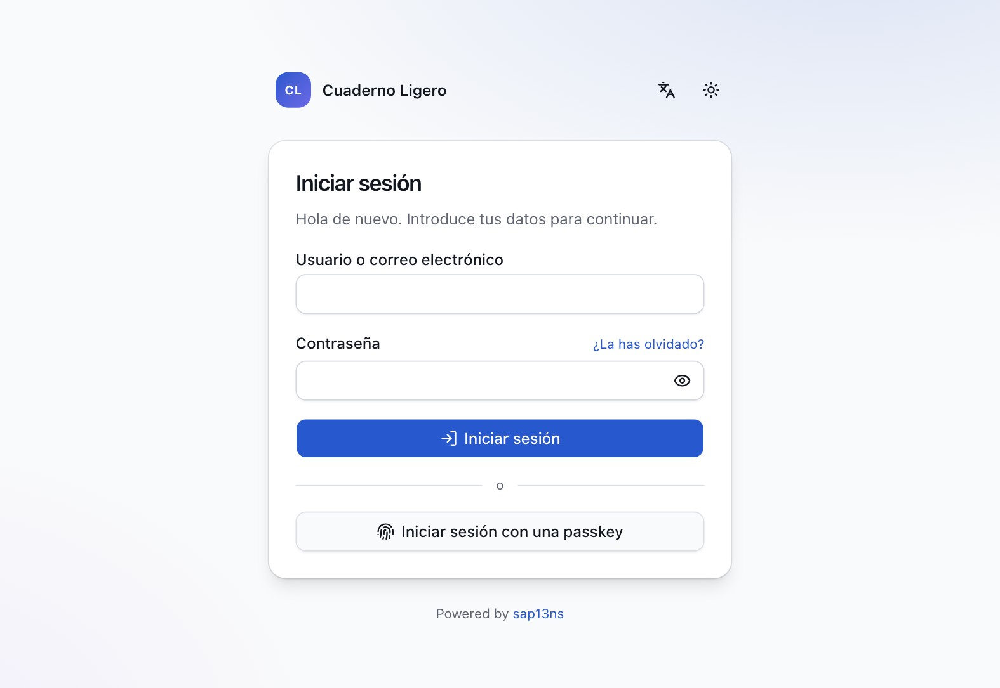
La primera vez: verificación en dos pasos
Quien escribe o administra tiene que proteger su cuenta con un segundo factor. La primera vez que entras, el panel te lleva a Verificación en dos pasos:
- Escanea el código QR con una aplicación de códigos, como Google Authenticator o 1Password.
- Escribe el código de 6 dígitos que te muestra y pulsa Activar.
- Guarda los códigos de recuperación con Copiar o Descargar, y confirma con Ya los he guardado. Cada uno sirve una vez, para entrar si pierdes el móvil.
En lugar de la aplicación puedes registrar una passkey (la huella o el rostro de tu dispositivo, o una llave de seguridad). Sirve como segundo factor o para entrar sin contraseña.
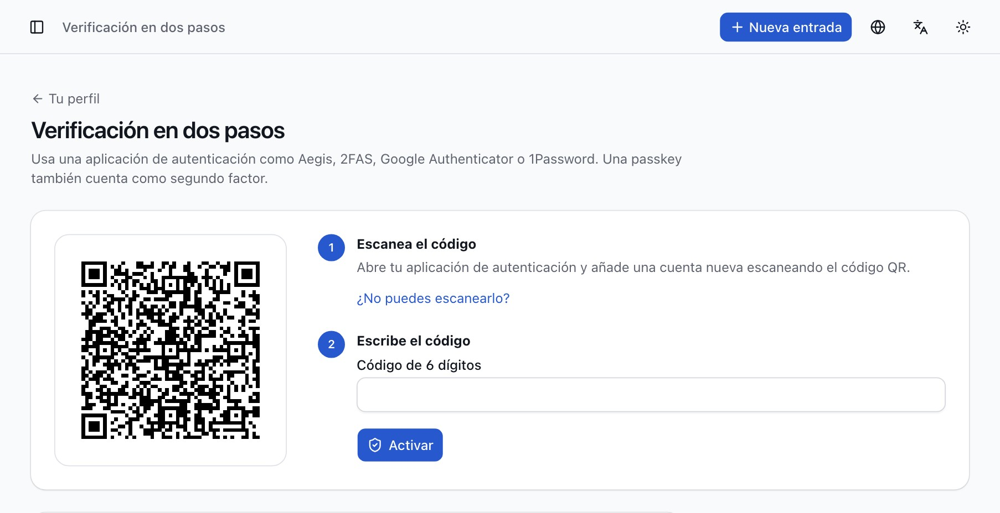
Si olvidas la contraseña
En la pantalla de acceso, el enlace de contraseña olvidada abre Restablece tu contraseña: escribe tu correo y pulsa Enviar enlace. Para que el mensaje llegue, el sitio tiene que tener configurado el correo (Ajustes → Correo electrónico). Si no llega, un administrador puede ponerte una contraseña nueva desde Usuarios.
Tu perfil
Arriba, junto a tu nombre, está Tu perfil. Desde ahí cambias:
- Perfil: nombre público, correo, sitio web, biografía y foto.
- Idioma del panel y modo claro u oscuro: solo para ti, sin afectar al sitio público.
- Contraseña, passkeys y verificación en dos pasos, con códigos de recuperación nuevos.
- Sesiones: Cerrar sesión en otros dispositivos, por si dejaste una abierta.
Capítulo 3El panel de un vistazo
El menú lateral agrupa todo en tres bloques. Esta es la lista completa, tal como la ve un administrador.
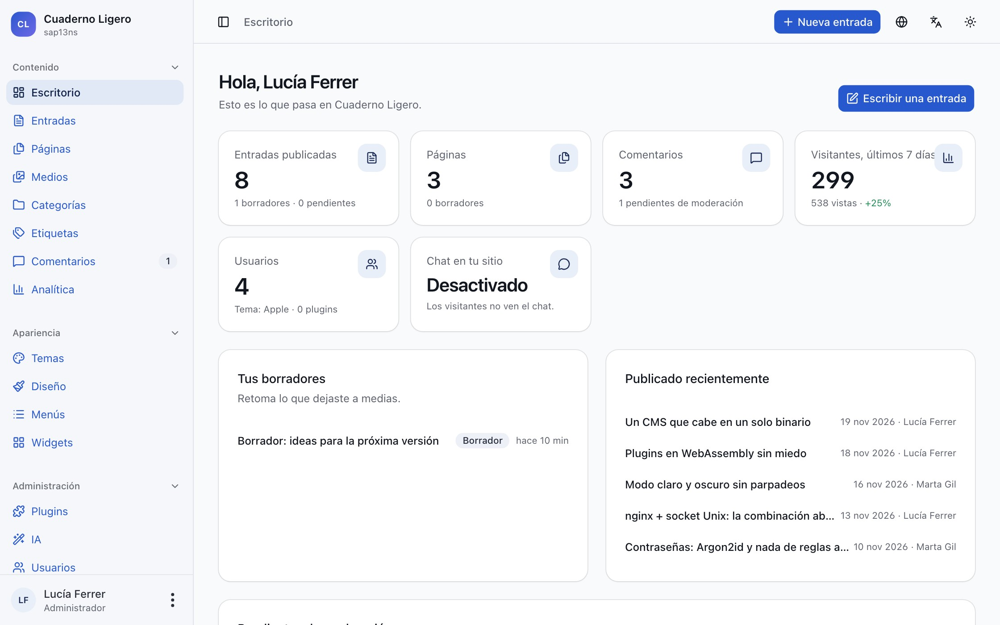
Contenido
| Sección | Para qué sirve |
|---|---|
| Escritorio | Resumen: tus borradores, lo publicado hace poco y los comentarios por moderar. |
| Entradas | Los artículos del blog. |
| Páginas | Las páginas fijas del sitio. |
| Medios | Imágenes y archivos subidos. |
| Categorías | La clasificación principal de las entradas. |
| Etiquetas | Palabras clave libres. |
| Comentarios | Moderación de lo que escriben los visitantes. |
| Analítica | Visitas, páginas más vistas, orígenes y bots. |
Apariencia
| Sección | Para qué sirve |
|---|---|
| Temas | Elegir, previsualizar y subir temas. |
| Diseño | Colores, tipografías, textos y estructura de las páginas. |
| Menús | Los menús de navegación, por ubicación e idioma. |
| Widgets | Los bloques de las zonas laterales y del pie. |
Administración
| Sección | Para qué sirve |
|---|---|
| Plugins | Instalar, activar y configurar funciones añadidas. |
| IA | El proveedor de inteligencia artificial y el asistente del sitio. |
| Usuarios | Cuentas y roles. |
| Ajustes | La configuración general del sitio. |
| Redirecciones | Reglas para direcciones antiguas. |
| Importar | Traer contenido de WordPress o de otro sap13ns. |
| Exportar | Sacar el contenido del sitio. |
| Copias de seguridad | Hacer, descargar y restaurar copias. |
| Trasladar sitio | Llevar el sitio entero a otro servidor. |
| Registro de auditoría | Quién hizo qué y cuándo. |
| Sistema | Versión instalada y actualizaciones. No aparece en los sitios de una red. |
Abajo del menú están Tu perfil, Ver el sitio, que abre la web pública, y Cerrar sesión.
Capítulo 4Entradas y páginas
Entradas y páginas se escriben con el mismo editor. Lo que cambia es dónde aparecen y qué opciones tienen.
La lista
Entradas muestra todos los artículos con su título, autor, categorías, estado y fecha. Puedes filtrar por idioma, buscar, y aplicar una acción en lote a varias a la vez. Nueva entrada abre el editor en blanco.
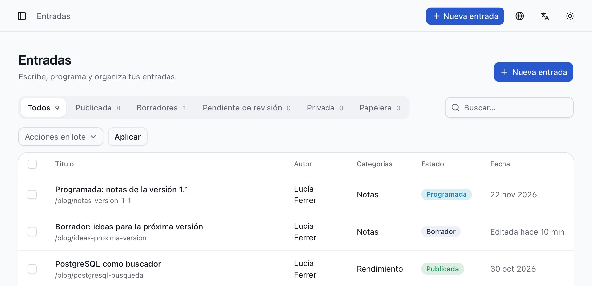
El editor
Arriba van el título y la dirección (la parte final de la URL, que se propone sola a partir del título). Debajo, el contenido, con tres modos que trabajan sobre el mismo texto:
| Modo | Qué hace |
|---|---|
| Visual | Escribes con formato, como en un procesador de textos. |
| Markdown | Ves y editas el código Markdown. |
| Vista previa | Muestra el texto como quedará publicado. |
La barra de herramientas ofrece estilos de texto y títulos, negrita, cursiva, tachado, enlaces, código, listas con viñetas y numeradas, citas, bloques de código, tablas, separadores, imágenes y vídeos, además de deshacer y rehacer.
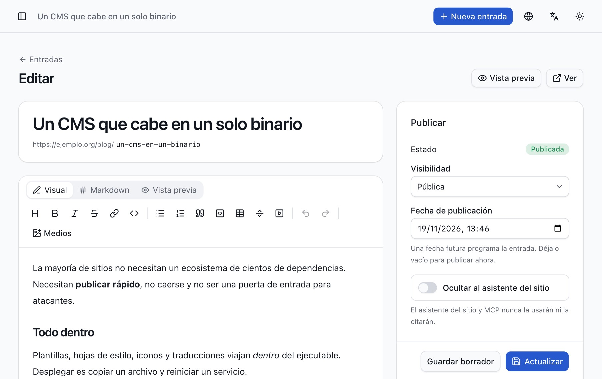
Imágenes
Inserta una imagen desde la biblioteca de medios o súbela en el momento. Una vez en el texto, arrastra una esquina para cambiar su tamaño y elige su disposición: a la izquierda o a la derecha con el texto alrededor, centrada o a ancho completo.
Vídeos
Pega un enlace de YouTube o Vimeo solo en una línea, o usa el botón Vídeo. Se convierte en un reproductor con su carátula y su título. No se carga nada de YouTube ni de Vimeo hasta que el visitante pulsa reproducir.
Pegar desde Word o Google Docs
Al pegar se conservan títulos, listas, tablas, enlaces, imágenes y énfasis, y se descartan las fuentes, los colores y el resto del formato que no hace falta.
El panel lateral
| Apartado | Qué controla |
|---|---|
| Publicar | La visibilidad (pública, privada o protegida con contraseña), la fecha de publicación y los botones para guardar y publicar. |
| Idioma | El idioma del texto y sus traducciones enlazadas. |
| Extracto | El resumen que aparece en los listados. Si lo dejas vacío, se toma del principio del texto. |
| Buscadores | La metadescripción que muestran Google y las redes sociales. |
| Imagen destacada | La imagen de cabecera y de los listados. Sin ella, el sitio genera una tarjeta con el título para compartir en redes. |
| Categorías y etiquetas | Solo en las entradas. |
| Atributos de página | Solo en las páginas: la página superior de la que cuelga y su orden. |
| Comentarios | Permitirlos o no en este texto, y el autor que firma. |
Guardar, publicar y programar
- Guardar borrador guarda sin publicar. El texto queda en estado Borrador.
- Publicar lo hace visible. Después, el botón pasa a ser Actualizar.
- Una fecha de publicación futura deja el texto Programado: se publica solo al llegar la hora.
- Los colaboradores no publican: su botón es Enviar a revisión, y el texto queda Pendiente de revisión hasta que un editor lo publica.
- Mover a la papelera lo retira. Desde la papelera se puede restaurar o eliminar permanentemente.
Lo que el editor hace por ti
- Autoguardado. Cada pocos segundos se guarda una copia de lo que escribes. Si vuelves a un texto y hay un guardado automático más reciente que la versión guardada, el editor te ofrece Restaurarlo o Descartar.
- Bloqueo de edición. Si otra persona tiene abierto el mismo texto, lo verás bloqueado. Tomar el control te lo pasa a ti; así dos personas nunca se pisan el trabajo.
- Revisiones. Cada guardado deja una versión. Desde Revisiones puedes verlas y recuperar una con Restaurar esta revisión.
- Redirección automática. Si cambias la dirección de un texto publicado, la antigua lleva a la nueva.
Capítulo 5Medios
Medios es la biblioteca de imágenes y archivos del sitio.
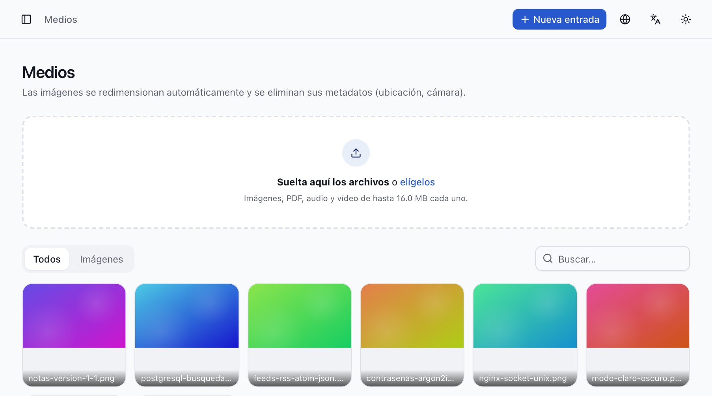
- Subir: arrastra archivos a la página o elígelos y pulsa Subir. Una barra muestra el progreso.
- Comprobación: cada archivo se revisa por su contenido real, no por su extensión. Lo que no es lo que dice ser se rechaza.
- Variantes: de cada imagen se generan tamaños menores, que el sitio usa donde conviene para cargar más rápido.
- Duplicados: si subes dos veces el mismo archivo, se detecta y no se guarda otra copia.
- Editar: al abrir un archivo puedes cambiar su texto alternativo, el que leen los lectores de pantalla y los buscadores, y su leyenda. También verás su dirección y el código Markdown para insertarlo.
Capítulo 6Categorías, etiquetas y comentarios
Categorías y etiquetas
Las categorías son las secciones del blog: pocas y estables. Las etiquetas son palabras clave libres. Cada una tiene su propia página de archivo en el sitio público. Se crean en Categorías y Etiquetas, o sobre la marcha desde el editor. En un sitio con varios idiomas, el nombre de cada categoría se puede traducir.
Comentarios
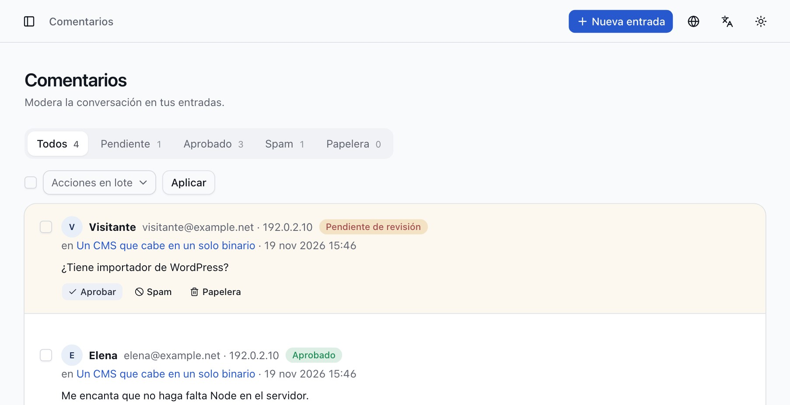
Comentarios reúne lo que escriben los visitantes. Los comentarios van en hilos, de modo que una respuesta queda bajo el comentario al que contesta. Sobre cada uno, o sobre varios seleccionados a la vez, puedes:
| Acción | Efecto |
|---|---|
| Aprobar | Lo publica en el sitio. |
| Rechazar | Lo devuelve a pendiente. |
| Spam | Lo marca como correo basura. |
| Papelera | Lo retira. Desde ahí, Restaurar o Eliminar permanentemente. |
El número de comentarios pendientes aparece junto a Comentarios en el menú y en el escritorio. Las reglas generales —si se permiten, quién puede comentar, si pasan por moderación, cuándo se cierran— están en Ajustes → Comentarios.
Capítulo 7Idiomas y traducciones
Un sitio tiene un idioma principal y los adicionales que quieras. Cada idioma adicional vive bajo su prefijo: /en/, /ca/…
Activar idiomas
En Ajustes → General eliges el idioma principal. En Ajustes → Idiomas añades los idiomas adicionales y traduces el título del sitio, la descripción corta y el texto del pie.
Traducir un texto
- Abre la entrada o la página y ve al apartado Idioma del panel lateral.
- Crea su traducción al idioma que quieras. Se abre un texto nuevo, enlazado con el original.
- Tradúcelo y publícalo. Si la IA está activada, puede preparar un primer borrador.
Los textos enlazados se reconocen entre sí: el selector de idioma del sitio lleva de una versión a la otra, y los buscadores reciben la relación entre ellas. Desvincular traducciones rompe el enlace sin borrar ningún texto.
Lo demás, por idioma
- Menús y widgets se definen por separado para cada idioma.
- Feeds (RSS, Atom y JSON): uno por idioma.
- El visitante primero: la portada se abre en el idioma del navegador si el sitio lo tiene; después, en el último que el visitante eligió.
Capítulo 8Apariencia: temas, diseño, menús y widgets
Temas
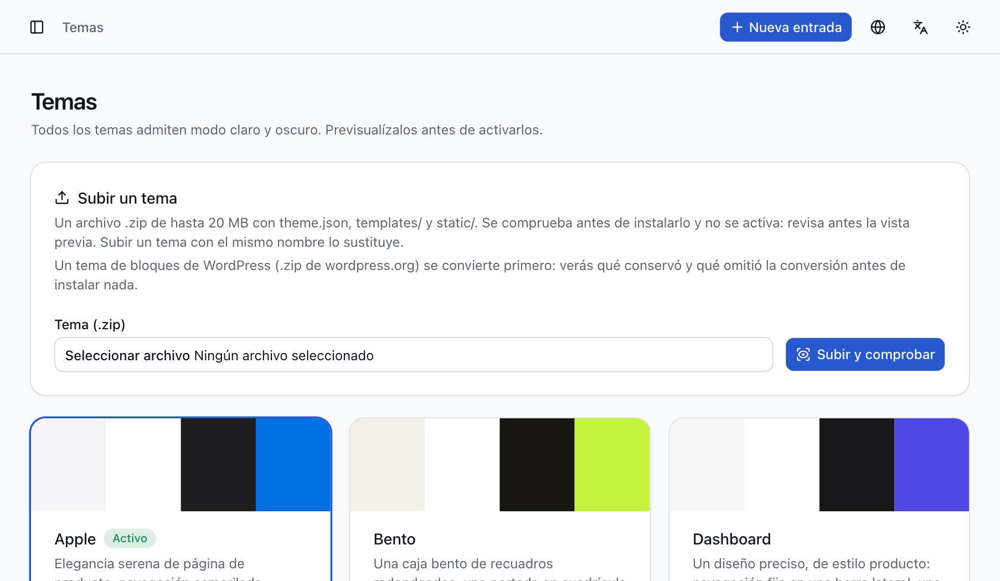
Apariencia → Temas muestra los temas disponibles. sap13ns trae seis, todos con modo claro y oscuro:
| Tema | Estilo |
|---|---|
| Apple | Limpio y tipográfico, con mucho espacio en blanco. |
| Neumorphism | Superficies suaves, en relieve. |
| Glassmorphism | Capas translúcidas, esmeriladas. |
| Bento Grid | Composición modular de tarjetas. |
| Dashboard | Estilo de aplicación, con navegación lateral. |
| Onepage | Sitio de una sola página, con el blog en /blog. |
En cada tema: Vista previa lo enseña con tu contenido sin cambiar nada, Activar lo pone en marcha, Opciones y Diseño lo ajustan, y Editar código abre sus archivos.
Subir un tema: elige el .zip y pulsa Subir y comprobar. El tema se revisa antes de instalarse y llega inactivo, para que lo previsualices. También se puede subir un tema de bloques de WordPress: se convierte, con un informe de lo que se conservó y lo que no.
Diseño
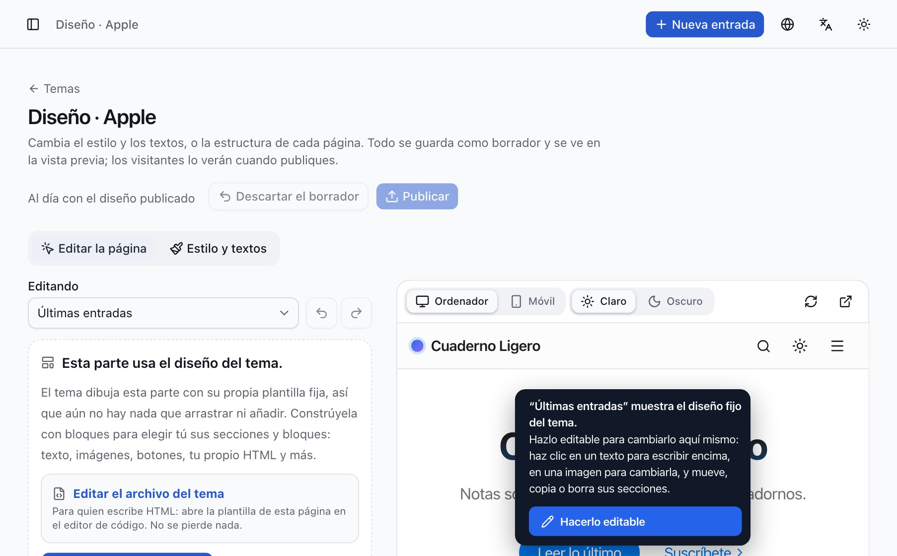
Apariencia → Diseño es una sola pantalla con vista previa en vivo y dos partes:
| Parte | Qué se cambia |
|---|---|
| Estilo y textos | Colores, tipografías, radio de las esquinas, densidad, cabecera y pie, animaciones, y los textos e imágenes que el tema deja editar. |
| Estructura | Los bloques de cada tipo de página: cabecera, menú, portada, lista de entradas, contenido, comentarios, zonas de widgets, texto, imagen, botón, HTML propio… Se ordenan arrastrando. |
- Versiones publicadas: se guardan las diez últimas, y cualquiera se puede restaurar.
- Exportar e importar: Exportar JSON guarda el diseño en un archivo; Importar al borrador lo carga, también en otro sitio.
- CSS personalizado: reglas propias, comprobadas para que no puedan ejecutar código.
- Editar como HTML: el botón
</>de una sección deja editar su HTML directamente. - Diseñar con IA: con la IA activada, describes lo que quieres («una página sobre mediación», «otros colores», «cambia este texto») y los cambios llegan al borrador para que tú los revises y publiques.
- Páginas de aterrizaje: hay bloques de características, cifras, testimonios, precios, preguntas y respuestas, logotipos y llamada a la acción, y plantillas de partida para una landing o un sitio de una página.
Menús
En Apariencia → Menús eliges la ubicación (las que ofrece el tema, como el menú principal o el del pie) y el idioma, y añades elementos: páginas, categorías o enlaces con el texto y la dirección que quieras. Se ordenan arrastrando y se guardan solos.
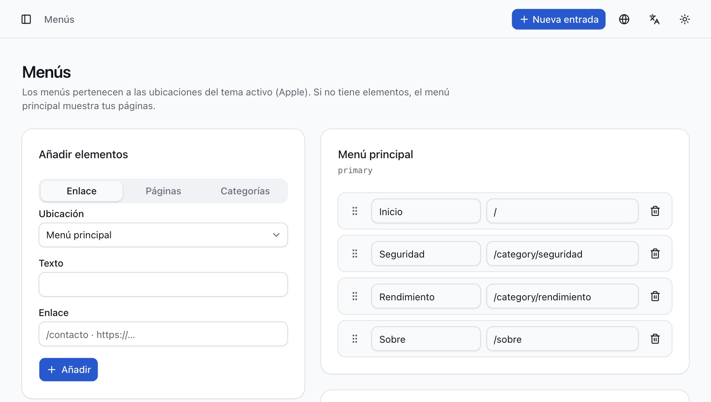
#precios desplaza hasta la sección con ese nombre, y vuelve a ella desde cualquier otra página.Widgets
Apariencia → Widgets llena las zonas que el tema reserva, como la barra lateral o el pie. Eliges el tipo de widget (entradas recientes, categorías, etiquetas, texto, entre otros), su título y su idioma, y lo arrastras a su sitio.
Capítulo 9Plugins
Un plugin añade una función al sitio. Cada uno se ejecuta aislado: no puede leer archivos ni abrir conexiones por su cuenta, y solo hace lo que sus permisos declaran.
Instalar y activar
- En Plugins → Plugins oficiales, pulsa Instalar en el que quieras. Para uno de terceros, usa Subir un plugin, elige el
.zipy pulsa Subir y analizar. - El paquete se analiza. Si tiene algo crítico, no se instala; si pide permisos delicados, te lo avisa y tienes que confirmarlo.
- Se instala desactivado. Abre Detalles, revisa los permisos que pide y pulsa Activar.
[contact] en una página significa que el plugin que debía sustituirlo no está activado. Actívalo en Plugins.Al activarlo quedan fijados el plugin y sus permisos. Si alguno cambia, el plugin se detiene hasta que lo revises. Cuando hay una versión más nueva, aparece Actualizar.
Plugins oficiales
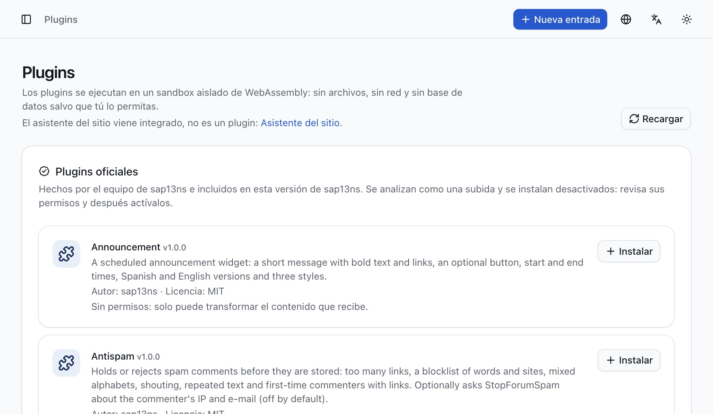
| Plugin | Qué hace |
|---|---|
| contact | Formulario de contacto que llega por correo al sitio. |
| toc | Tabla de contenidos. |
| callouts | Avisos y recuadros destacados. |
| announcement | Barra de anuncios. |
| related | Entradas relacionadas, por categorías y etiquetas comunes. |
| external-links | Enlaces externos y de afiliación. |
| embeds | Reproductores de YouTube, Vimeo y TikTok que cargan al pulsar. |
| youtube | Los últimos vídeos de un canal o una lista, en cuadrícula o carrusel. |
| schema | Datos estructurados Schema.org para los buscadores. |
| antispam | Retiene o rechaza comentarios de spam. |
| social | Publica las entradas nuevas en Bluesky y Mastodon. |
| x-autopost | Publica las entradas nuevas en X. |
| Comparte las entradas nuevas en tu perfil de LinkedIn. | |
| Publica las imágenes destacadas en Instagram y muestra tus últimas publicaciones. |
Los plugins que usan códigos cortos se insertan escribiendo su código en el texto, como [contact].
Capítulo 10Inteligencia artificial
La IA es opcional y tiene dos usos distintos: ayudar a quien escribe, y atender a quien visita.
Conectar un proveedor
En IA, marca Activar la IA en este sitio, elige el proveedor (Claude, OpenAI o un servidor compatible, Gemini, o un modelo local), pega su clave de API, indica el modelo de texto y pulsa Guardar y probar. La clave se guarda cifrada. El apartado Imágenes permite usar otro proveedor para generar imágenes.
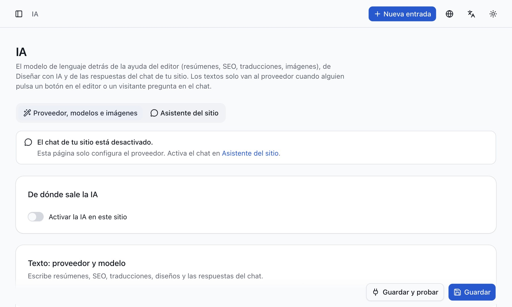
Quién y cuánto fija desde qué rol se puede usar y los topes mensuales por persona, de peticiones y de imágenes. La misma página muestra el consumo del mes.
Asistente de escritura
Dentro del editor, el panel de IA puede:
- resumir el texto en un extracto;
- proponer título, descripción, dirección y palabras clave para buscadores;
- traducir a un borrador enlazado en otro idioma;
- redactar, mejorar, acortar, esquematizar o continuar un texto;
- generar la imagen de cabecera o imágenes para el texto, si el proveedor lo admite.
Un revisor de estilo, que funciona sin IA, señala muletillas y frases de relleno tanto en lo que escribes como en lo que propone el modelo.
Asistente del sitio
Es un chat para los visitantes que responde con el contenido de tus entradas y páginas, y cita de dónde sale cada respuesta. Se activa en IA → Asistente del sitio:
| Apartado | Qué se ajusta |
|---|---|
| Chat en tu sitio | Mostrar el asistente en el sitio. Aparece cuando el proveedor de IA también está activado. |
| Botón del chat | La esquina (abajo a la derecha o a la izquierda), la altura y un texto opcional junto al botón. |
| Ventana del chat | Nombre, saludo y preguntas sugeridas, por idioma. |
| Límites | Preguntas por visitante y hora, y al día y al mes en todo el sitio. |
| Índice | El estado de lo que el asistente ha leído. Se actualiza al publicar. |
Los borradores, los textos programados y los privados nunca llegan al asistente.
Política ante las IA externas
En Ajustes → Compartir, IA y estadísticas decides cómo trata el sitio a los rastreadores de IA: abierto, respuestas sí, entrenamiento no, o cerrado.
Capítulo 11Analítica
Analítica cuenta las visitas sin cookies y sin guardar ningún dato que identifique a nadie. Por eso no necesita aviso de consentimiento.
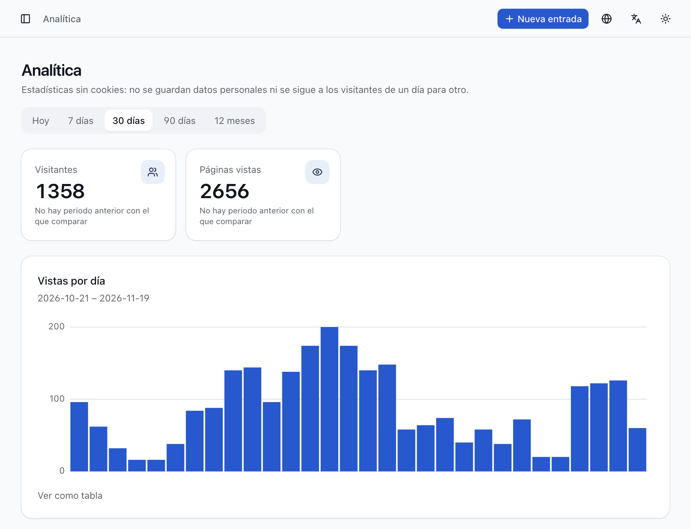
- Vistas por día y visitantes únicos, con un gráfico del periodo.
- Páginas más vistas y de dónde llegan las visitas.
- Navegadores, sistemas, dispositivos e idiomas.
- Visitantes por país, en un mapa, si el servidor tiene instalada la base de datos de países. Solo se guarda el país.
- Bots, en una tarjeta aparte: buscadores, bots de IA, vistas previas de redes sociales, herramientas de monitorización y escáneres de vulnerabilidades, con los más activos por su nombre.
No cuentan como visitas los bots, las precargas del navegador ni quien navega con la sesión del panel abierta.
Capítulo 12Usuarios y roles
Cada cuenta tiene un rol, y el rol decide qué puede hacer. Da a cada persona el menor rol con el que pueda trabajar.
| Puede… | Suscriptor | Colaborador | Autor | Editor | Administrador |
|---|---|---|---|---|---|
| Entrar al panel y editar su perfil | Sí | Sí | Sí | Sí | Sí |
| Escribir sus propias entradas | — | Sí | Sí | Sí | Sí |
| Publicar sus entradas | — | — | Sí | Sí | Sí |
| Subir medios | — | — | Sí | Sí | Sí |
| Editar las entradas de otros | — | — | — | Sí | Sí |
| Páginas, categorías y etiquetas | — | — | — | Sí | Sí |
| Moderar comentarios y ver la analítica | — | — | — | Sí | Sí |
| Apariencia y plugins | — | — | — | — | Sí |
| Usuarios, ajustes y herramientas | — | — | — | — | Sí |
| Registro de auditoría | — | — | — | — | Sí |
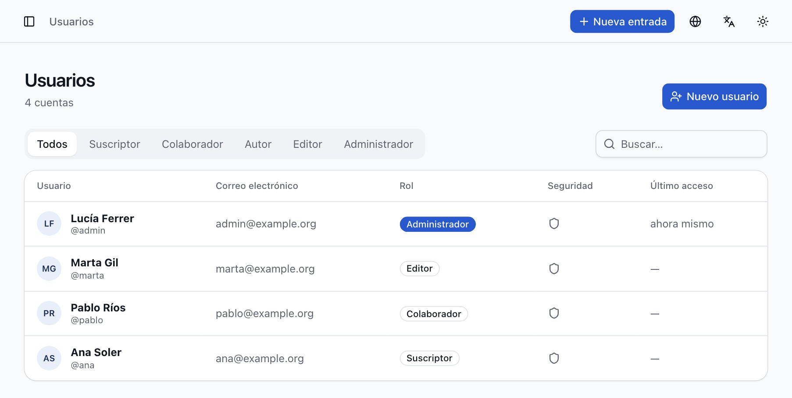
Gestionar cuentas
En Usuarios, Nuevo usuario crea una cuenta con su nombre de usuario, correo, rol y contraseña. Al abrir una cuenta existente puedes cambiar sus datos y su rol, y en Seguridad:
| Acción | Cuándo usarla |
|---|---|
| Contraseña | Para ponerle una nueva si la ha olvidado y el correo no funciona. |
| Cerrar todas las sesiones | Si ha perdido un dispositivo o sospechas de un acceso ajeno. |
| Restablecer la 2FA | Si ha perdido el móvil y los códigos de recuperación. Tendrá que configurarla otra vez al entrar. |
| Desbloquear la cuenta | Tras demasiados intentos fallidos de acceso. |
| Eliminar usuario | Antes de borrar, puedes pasar sus entradas a otra persona. |
Capítulo 13Ajustes
Ajustes reúne la configuración del sitio. La página principal tiene ocho apartados; el correo, la privacidad y el modo mantenimiento tienen página propia.
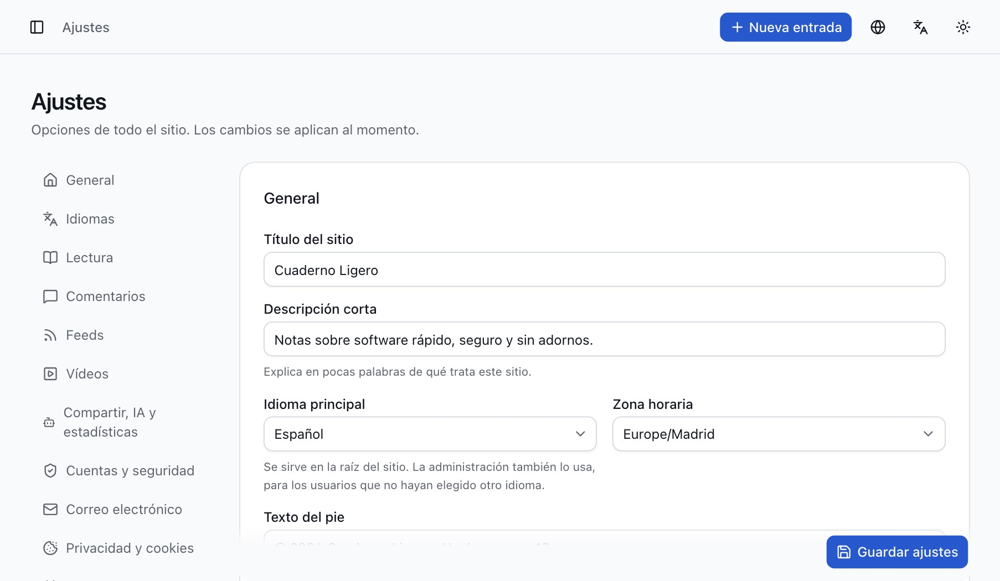
| Apartado | Qué contiene |
|---|---|
| General | Título del sitio, descripción corta, idioma principal, zona horaria, texto del pie e icono del sitio. |
| Idiomas | Los idiomas adicionales y la traducción del título, la descripción y el pie. |
| Lectura | Qué muestra la página de inicio: tus últimas entradas, la portada del tema o una página estática. También las entradas por página y la opción de pedir a los buscadores que no indexen el sitio. |
| Comentarios | Permitirlos, limitarlos a usuarios registrados, la moderación previa, el cierre automático en entradas antiguas y el uso de Gravatar. |
| Feeds | Cuántos elementos lleva cada feed y si incluye el texto completo o un resumen. |
| Vídeos | Cómo se incrustan: con vista previa, sin ella, o dejando los enlaces como enlaces. |
| Compartir, IA y estadísticas | Las imágenes para redes sociales, la política ante los rastreadores de IA, la lectura sin conexión, los avisos de entradas nuevas y qué pasa cuando el sitio cambia mientras alguien tiene una página abierta. |
| Cuentas y seguridad | El registro de cuentas y su rol, la dirección de acceso, ocultar la administración a los visitantes, para quién es obligatoria la verificación en dos pasos y la duración de la sesión. |
Correo electrónico
El sitio necesita un servidor de correo para enviar los enlaces de «contraseña olvidada», los avisos y los mensajes de los formularios. En Ajustes → Correo electrónico, marca Enviar a través de este servidor y rellena servidor, puerto, nombre de usuario, contraseña y remitente. Guardar y enviar una prueba te manda un mensaje para comprobarlo; se pueden enviar hasta cinco pruebas por hora.
Privacidad y cookies
El aviso de cookies se construye solo, a partir de lo que el sitio usa de verdad: el propio sap13ns declara lo suyo y cada plugin lo que añade. En Ajustes → Privacidad y cookies ajustas el título y el texto del aviso, el enlace a tu política de cookies, y puedes volver a preguntar a todos los visitantes. La tabla Qué guarda y carga este sitio es la misma que ven ellos.
- Aceptar y rechazar tienen el mismo peso, y hay un interruptor por categoría.
- Nada opcional se carga antes del consentimiento.
- Un sitio que solo usa cookies necesarias muestra un simple aviso informativo.
Modo mantenimiento
Ajustes → Modo mantenimiento cierra el sitio a los visitantes con un botón. Ven una página de mantenimiento, con el icono del sitio y el texto que escribas, y los buscadores reciben la indicación de volver más tarde. Quien escribe en el sitio (colaboradores en adelante) sigue navegándolo con normalidad una vez iniciada la sesión.
Dirección de acceso
En Cuentas y seguridad puedes cambiar /login por otra dirección. La antigua responde entonces como una página inexistente, lo que aleja a los bots que la prueban. Ocultar la administración a los visitantes hace lo mismo con /admin para quien no ha iniciado sesión.
Capítulo 14Herramientas: importar, exportar, copias y traslados
Redirecciones
En Redirecciones añades reglas con su origen, su destino y su tipo: permanente (301), temporal (302) o «ya no existe» (410). La lista muestra cuántas veces se ha usado cada una. Las que nacen al cambiar la dirección de un texto se crean solas.
Importar desde WordPress
- En WordPress, exporta el contenido a un archivo
.xml. - En Importar, sube ese archivo y elige a quién atribuir el contenido sin autor equivalente y en qué idioma entra.
- Decide si se descargan las imágenes y los adjuntos, y si se omiten las entradas cuya dirección ya existe.
- Haz primero una prueba: muestra qué se importaría sin cambiar nada. Después pulsa Empezar.
Entran autores, categorías, etiquetas, entradas, páginas, comentarios y medios, y se crean redirecciones desde las direcciones antiguas. El trabajo corre en segundo plano y termina con un informe.
Exportar
Exportar saca el contenido en un formato que leen tanto WordPress como sap13ns. Eliges qué entra (entradas, páginas, biblioteca de medios), en qué estados, entre qué fechas y de qué autor, y el formato:
- Archivo de exportación de WordPress (
.xml). - Todo en un
.zip: ese archivo, los medios y una copia en Markdown de cada texto.
Los datos personales de quienes comentan solo salen si marcas la casilla. Las contraseñas, los segundos factores y las claves nunca se exportan. Un .zip grande se prepara en segundo plano y se descarga desde Listas para descargar durante 24 horas.
Copias de seguridad
Copias de seguridad guarda el sitio entero en un .zip: contenido, medios, ajustes, usuarios y roles, menús, widgets, diseños, redirecciones y la configuración de los plugins. No guarda contraseñas, segundos factores, passkeys ni claves de API: tras restaurar una copia en un sitio nuevo, cada persona entra restableciendo su contraseña.
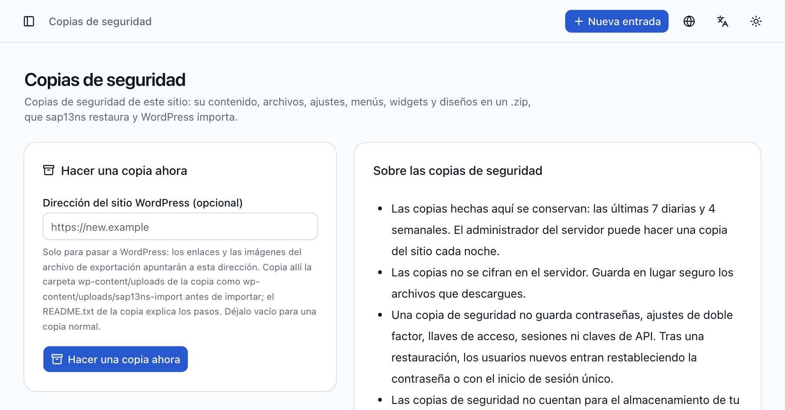
- Hacer una copia ahora crea una en el momento.
- Copias guardadas lista las que hay, con su fecha y su tamaño, para descargarlas.
- Restaurar una copia de seguridad devuelve el sitio a ese punto. Pide una confirmación escrita y tu contraseña actual, y antes hace una copia de seguridad del estado presente.
Trasladar sitio
Trasladar sitio lleva el sitio completo —contenido, usuarios con sus contraseñas, ajustes, medios, plugins, temas y claves— a otro servidor, en un único paquete cifrado.
- En el sitio de origen, abre Llevar este sitio a otro servidor, elige una frase de paso de al menos 12 caracteres, confirma con tu contraseña y pulsa Crear el paquete. Descárgalo cuando esté listo; espera 24 horas.
- En el servidor de destino, con sap13ns ya instalado en la misma versión o una posterior, abre Traer un sitio aquí, sube el paquete y escribe su frase de paso.
- Revisa el resumen de lo que contiene, escribe el nombre del sitio y tu contraseña, y pulsa Reemplazar este sitio. Antes se hace una copia de seguridad; el servidor se reinicia solo.
- Vuelve a iniciar sesión.
Si el sitio cambia de dominio, los enlaces escritos con la dirección antigua dentro de los textos siguen apuntando a ella, y las passkeys creadas para el dominio anterior dejan de servir: sus dueños entran con la contraseña y registran una nueva.
Registro de auditoría
Registro de auditoría anota las acciones delicadas: quién, cuándo, qué acción y sobre qué elemento. Sirve para saber qué pasó tras un cambio inesperado.
Capítulo 15Sistema y actualizaciones
Sistema muestra la versión instalada y avisa cuando hay una nueva. Solo aparece en los sitios que no forman parte de una red.
- El sitio comprueba por sí mismo si hay versiones nuevas; Comprobar ahora lo hace al momento.
- Qué cambia y Notas de la versión explican lo que trae la actualización antes de instalarla.
- Actualizar ahora descarga la versión, comprueba su firma y sustituye el programa. El sitio se reinicia en unos segundos y conserva el programa anterior por si hubiera que volver atrás.
Las actualizaciones del contenido —la base de datos— se aplican solas al arrancar. No hay que hacer nada más.
Capítulo 16Redes de sitios
En una red, un solo sap13ns sirve un portal y muchos sitios. Cada sitio está aislado: tiene sus usuarios, su contenido, sus archivos, sus plugins y sus temas.
El portal y «Mis sitios»
Las personas se registran en el portal y gestionan lo suyo en Red → Mis sitios: solicitar un sitio, entrar en los que ya tienen, mejorar su plan y ver su facturación. Con una sola cuenta del portal se entra en todos los sitios a los que se pertenece. El portal exige segundo factor a todas las cuentas.
Planes
Cada sitio tiene un plan —Personal, Pro o Business— que fija su espacio de almacenamiento, sus dominios propios y si puede subir plugins y temas. Una suscripción paga un sitio. Si un pago falla, el sitio queda retenido, nunca borrado.
Dominios propios
Un sitio se sirve en su dirección de la red y puede añadir dominios propios: en Red → Mis sitios, el botón Dominios del sitio. Para demostrar que el dominio es tuyo, añades un registro TXT en su DNS; después lo apuntas a la red. El certificado https se obtiene solo.
Acceso de soporte
Los administradores de la red no entran en tu sitio por defecto. Desde Usuarios → Acceso de soporte tú decides si se lo permites: durante 24 horas, 7 días o hasta que lo revoques. Cada acceso queda en el registro de auditoría.
Lo que cambia respecto a un sitio único
- Copias: la red hace una copia de cada sitio cada noche. Están en Copias de seguridad.
- Plugins: se instalan los que la red ofrece; los que subas tú esperan una revisión.
- Sistema: no aparece; las actualizaciones las hace quien opera la red.
- Salir de la red: Trasladar sitio lleva tu sitio a un servidor propio.
Capítulo 17Para quien administra el servidor
Este capítulo es para la persona con acceso al servidor. Quien solo usa el panel puede saltárselo.
Qué hay instalado
sap13ns es un único programa, sin dependencias, que se ejecuta detrás de nginx y guarda sus datos en PostgreSQL.
| Ruta | Contenido |
|---|---|
/usr/local/bin/sap13ns | El programa. |
/etc/sap13ns/sap13ns.env | La configuración: base de datos, dirección pública y clave secreta. |
/var/lib/sap13ns | Los datos en disco: medios subidos, plugins, temas y copias. |
SAP13NS_SECRET_KEY cifra las claves guardadas y firma las sesiones. Si se cambia o se pierde, lo que el sitio guarda cifrado deja de poder abrirse. Tenla también fuera del servidor.SAP13NS_BASE_URL debe ser la dirección pública con https://. Con una dirección http://, las sesiones del panel viajan sin cifrar.
Órdenes habituales
Se ejecutan en el servidor. Las que empiezan por sap13ns van como el usuario sap13ns y con el archivo de configuración, salvo la de actualizar.
| Para… | Orden |
|---|---|
| Arrancar, parar o reiniciar | sudo systemctl start|stop|restart sap13ns |
| Ver el registro en vivo | sudo journalctl -u sap13ns -f |
| Saber la versión | sap13ns version |
| Crear un usuario | sap13ns user create -username U -email E -role admin |
| Cambiar una contraseña | sap13ns user reset-password -username U |
| Ver la dirección de acceso | sap13ns settings login-path (con -reset vuelve a /login) |
| Hacer una copia | sap13ns backup create |
| Listar y restaurar copias | sap13ns backup list y sap13ns backup restore ARCHIVO |
| Actualizar | sudo sap13ns update, y después reiniciar. Haz antes una copia. |
| Instalar un plugin oficial | sap13ns plugin install -official ID |
| Trasladar un sitio | sap13ns transfer export|inspect|import |
La forma completa de una orden es esta:
sudo -u sap13ns sap13ns user create -env /etc/sap13ns/sap13ns.env \
-username ana -email ana@ejemplo.com -role editorAl crear un usuario o cambiar una contraseña, el programa genera una contraseña segura y la muestra una sola vez. Para fijar una propia, pásala por la entrada estándar en lugar de escribirla en la orden.
Copias y cifrado
Un temporizador hace una copia cada noche en /var/lib/sap13ns/backups. Para que se guarden cifradas, define SAP13NS_BACKUP_PASSPHRASE_FILE con la ruta de un archivo que contenga la frase de paso. Sin ella, las copias se guardan sin cifrar.
Después de actualizar en una red con nginx
La actualización sustituye solo el programa. El script que gestiona los certificados de los dominios propios, sap13ns-domains, es un archivo aparte: cuando las notas de una versión lo pidan, reinstálalo desde el paquete de esa versión.
Capítulo 18Problemas frecuentes
| Qué pasa | Por qué y qué hacer |
|---|---|
| Pongo bien la contraseña y vuelvo al inicio de sesión | El sitio se está sirviendo por http. El panel necesita https para mantener la sesión. Hay que instalar el certificado del dominio. |
| No me llega el correo para restablecer la contraseña | El sitio no tiene configurado el envío. Revísalo en Ajustes → Correo electrónico. Mientras, un administrador puede poner una contraseña nueva en Usuarios. |
| He perdido el móvil con los códigos | Entra con un código de recuperación. Si tampoco los tienes, un administrador puede Restablecer la 2FA de tu cuenta. |
| Mi cuenta está bloqueada | Demasiados intentos fallidos. Espera, o pide a un administrador que la desbloquee. |
| No encuentro la página de acceso | El administrador cambió la dirección. Quien administra el servidor puede consultarla con sap13ns settings login-path. |
| Cambié el diseño y el sitio sigue igual | Los cambios de Diseño son un borrador. Pulsa Publicar. |
Aparece un código como [contact] en una página | El plugin que lo sustituye no está activado. Actívalo en Plugins. |
| Un texto aparece bloqueado | Otra persona lo tiene abierto. Avísale, o usa Tomar el control. |
| No se ven imágenes ni estilos en el sitio | Suele ser un sitio configurado como https al que se entra por http: el navegador pide los archivos por https y no los encuentra. Se resuelve con el certificado. |
| El chat del sitio no aparece | Necesita dos cosas: Mostrar el asistente en el sitio y un proveedor de IA activado en IA. |
| Los visitantes ven «en mantenimiento» | El modo mantenimiento está activado. Se quita en Ajustes → Modo mantenimiento. |
| Publiqué algo y no lo veo | Comprueba la fecha (una futura lo deja programado), la visibilidad y el idioma en el que estás mirando el sitio. |
Dónde seguir
La documentación técnica acompaña al programa, en inglés: instalación y operación (DEPLOY.md), redes de sitios (MULTISITE.md), creación de temas (THEMES.md) y de plugins (PLUGINS.md), y el modelo de seguridad (SECURITY.md).